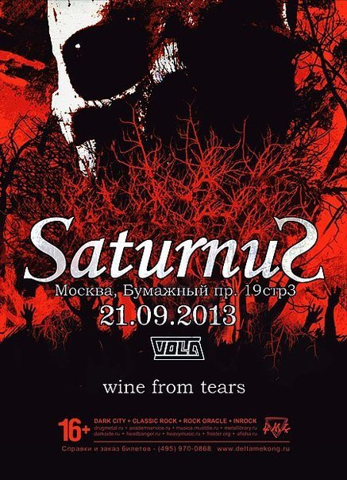

|
......................................................................................................................................................

......................................................................................................................................................
12.04.13 - Трек-лиcт с нового альбома можно посмотреть в разделе "Releases".
Оформление альбома выполнил Роман Corvinus Камин.

......................................................................................................................................................
12.04.13 - У нас сменился адрес нашего сайта. Теперь он звучит так winefromtears.com.
И еще одна приятная новость, мы только что отдали на тиражирование наш новый альбом! Уже совсем скоро в продаже на Solitude Prod.
......................................................................................................................................................
1.09.12 - Всем привет, рады представить вашему вниманию наши новые треки с грядущего второго полноформатного альбома:
1. Allergic Sun
2. Let Me In
3. Silence No More (feat Elle)
......................................................................................................................................................
20.01.11 - 19 февраля в клубе "Каста" (г. Москва) состоится презентация альбомов сразу двух представителей российской doom-сцены - Who Dies in Siberian Slush (death doom/funeral metal) и Voiceless Void (doom/gothiс metal) при поддержке Wine From Tears, Asterion и Откровения Дождя. Начало концерта в 19:00.
......................................................................................................................................................
01.11.10 - В группе произошли изменения в составе. В ближайшее время к Wine From Tears присоединятся новые клавишник и басист.
Группа приступила к записи второго полноформатного альбома.
......................................................................................................................................................
22.09.10 - Ближайший концерт 13 октября 2010 года в Рок-баре "Подвал", Самара.
......................................................................................................................................................
13.09.10 - На сайте появилась своя встроенная гостевая книга. Т.к. ранее использовалась сторонняя, то все сообщения не сохранились. Зато теперь не будет спама =]
......................................................................................................................................................
16.07.10 - Свежие новости: группа готовится к записи второго альбома, начало записи планируется на сентябрь текущего года. Альбом планируется записываться своими силами, кроме барабанов и вокала.
......................................................................................................................................................
14.03.10 - В фотогалерее появились снимки с концерта в Москве Shadow Doom Festival III.
......................................................................................................................................................
27.09.09 - Ближайшее выступление 10 октября в Москве на Shadow Doom Festival. Так же нас проиндексировали на Metal-Archives.com!
......................................................................................................................................................
08.06.09 - Группа продолжает собирать плоды от выпущенного дебютного альбома - количество весьма положительных отзывов только возрастает. Составляется рассписание мини турне по России и по городам Прибалтики на осень. Даны интервью чешскому металлическому вэб-порталу и российскому MetalLibrary, напечатана информация о группе в китайском журнале XMusic о тяжмете, пишутся рецензии на альбом. В ближайшее время на сайте появится раздел, где все это можно будет увидеть.
......................................................................................................................................................
09.04.09 - В разделе Gallery выложены фотографии с презентации альбома в рок-баре "Подвал", г. Самара.
......................................................................................................................................................
05.04.09 - В разделе Releases доступны для скачивания в ознакомительных целях два трека.
......................................................................................................................................................
01.04.09 - 11 апреля, г. Пенза, рок-кафе "Захват" OLD SCHOOL METAL PARTY, vol. 2! РЕВЕНАНТ (Пенза, death metal), DICTATOR (Пенза, black metal), КРИК (Пенза, progressive thrash/heavy metal), + СПЕЦИАЛЬНЫЕ ГОСТИ WINE FROM TEARS (Самара, gothic doom metal) - презентация альбома Through The Eyes Of A Mad!
......................................................................................................................................................
27.03.09 - Вышел дебютный альбом группы Wine From Tears - Through The Eyes Of A Mad!
Пресс релиз: "Дебютный альбом российской группы Wine From Tears, ставший итогом многолетнего пути группы, получившей известность среди любителей жанра по участию в отечественных doom-фестах. "Through The Eyes Of A Mad" - это гармоничное слияние тяжёлых гитар и атмосферных клавишных партий, жёстких рифов и красивых мелодий, продолжающих развитие идей таких групп, как Saturnus, Swallow The Sun и Draconian. Запись и сведение альбома были выполнена в профессиональной студии SBS Records. Диск с золотым напылением и великолепное оформление буклета от Corvinus (Откровения Дождя, Mose) прекрасно дополняют впечатление от замечательной музыки группы." (диск можно заказать на сайте лейбла http://solitude-prod.com)
......................................................................................................................................................
23.03.09 - Лейбл назначил оффициальную дату релиза - 27 марта 2009 года. В этот же день в рок-клубе "Подвал" (Самара, ул. Галактионовская, 46) пройдет презентация альбома при поддержке групп Erynium и Autumn Letargy. В разделе "Releases" будут появляться рецензии на альбом, по мере их выхода.
......................................................................................................................................................
12.02.09 - Альбом в процессе тиражирования. Презентация альбома в Самаре 27 марта в рок-клубе "Подвал". Ближайший выездной концерт 14 марта г. Саратов (рок-клуб Варьете).
......................................................................................................................................................
10.12.08 - Заканчивается работа над сведением и мастерингом материала.
......................................................................................................................................................
20.11.08 - Фотографии с выступления в Казани от 15.11.08 в галерее.
......................................................................................................................................................
15.11.08 - Оформление альбома полностью готово.
......................................................................................................................................................
25.10.08 - Готова обложка для нашего первого релиза "Through The Eyes Of A Mad". Дизайнер Roman Corvinus. В настоящее время идет работа над самим буклетом.
......................................................................................................................................................
13.10.08 - Доступны для просмотра промо-фотографии в разделе Gallery.
Фотограф: Roman Corvinus. Место: развалины душевной лечебницы.
......................................................................................................................................................
8.10.08 - Работает гостевая книга. Оставляем отзывы и пожелания).
......................................................................................................................................................
2.10.08 - Появлись анкеты участников коллектива.
......................................................................................................................................................
27.09.08 - Состоялась первая выездная фотосессия группы.
В ближайшее время будут выложены фотографии.
......................................................................................................................................................
13.04.08 - Начало программинга, а значит и первый кирпичик (не считая самого дизайна) в создании сайта Самарской дум-метал команды Wine From Tears!
......................................................................................................................................................
|
|
Все, кто желает помочь группе
Wine From Tears
могут перечислить любые средства
на Qiwi-кошелек 927 685 5860.
Огромное спасибо за вашу помощь! |